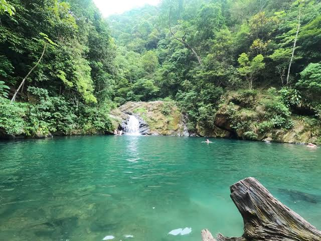
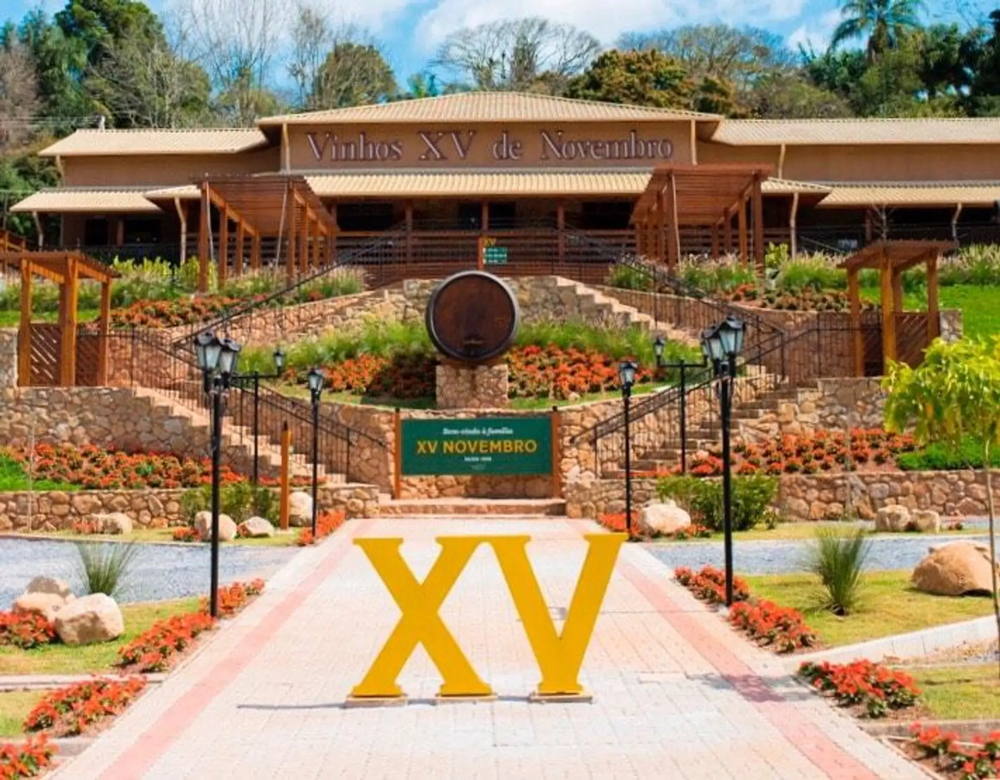
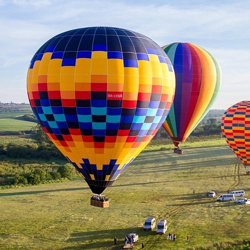

Cachoeira - Lagoa azul
A cachoeira é um lugar incrível e renovador! Sua cor "azul" é o diferencial, o trajeto até ela é moderado (pra quem não gosta de se arriscar) com bastante contato com a natureza.

A cachoeira é um lugar incrível e renovador! Sua cor "azul" é o diferencial, o trajeto até ela é moderado (pra quem não gosta de se arriscar) com bastante contato com a natureza.

A vinícola VX de Novembro possui vinhos para todos os gostos: Vinho de mesa, finos e espumantes da linha Quinta Moraes, além de sucos, cooler e profutos à base de alcachofra. Conta também com atrações e estruturas deslumbrantes, ótimo passeio para se fazer em São Roque.

Para observar Boituva de um ângulo diferente e sentir aquele friozinho na barriga, o passeio de balão é ideal para quem gosta de adrenalina. Voo super tranquilo e quente! Na houra do pouso é melho se segurar.